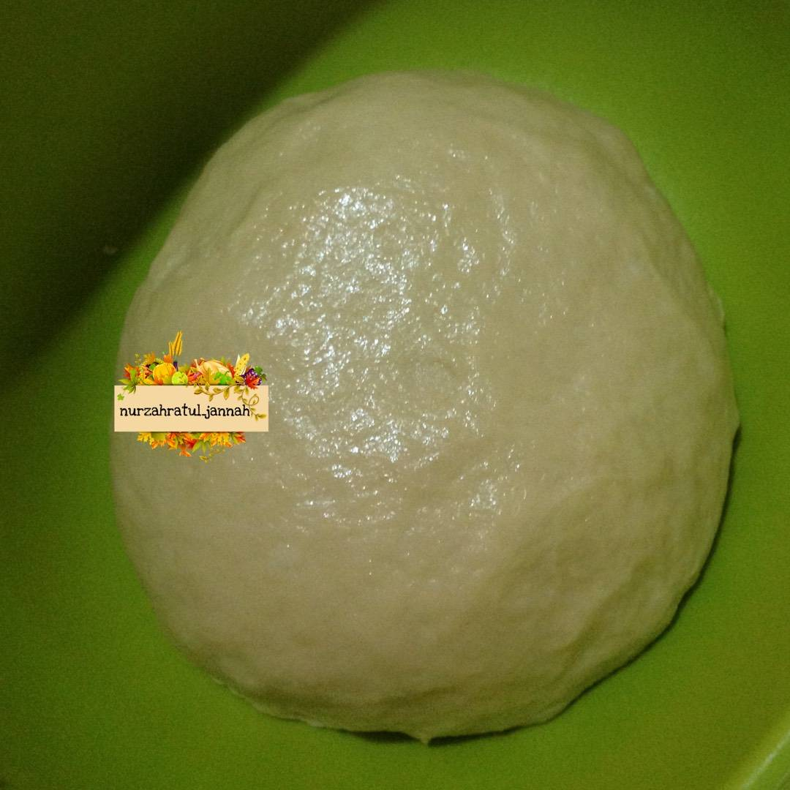

Resep Roti Maryam
Bahan-bahan :
- 500 gr tepung terigu prot sedang / prot tinggi
- 1 butir telur utuh dan 1 kuning telur
- 2 sdm susu bubuk / susu kental manis
- 1/2 sdt garam
- 84 ml minyak goreng
- 225 ml air hangat
- Margarin secukupnya (hanya untuk olesan)
- Siapkan wadah, campur air, minyak goreng dan telur,
aduk hingga rata menggunakan wisk atau garpu
- Masukkan tepung terigu, susu, dan garam, uleni sampai kalis

- Bagi adonan sama rata, bentuk bulat-bulat, olesi margarin. Setelah itu tutup dengan
plastik dan lap basah, diamkan selama 1 jam
- Ambil satu adonan, pipihkan hingga tipis olesi
dengan margarin secara merata
- Lalu gulung perlahan sampai bentuk memanjang dan sedikit ditarik agar lebih panjang[1].
Kemudian gulung melingkar dengan arah berlawanan jadi seperti huruf s [2].
ketika sudah bertemu ditengah, lalu tumpuk Jadi satu[3]
- Panaskan teflon, ambil adonan yang sudah di tumpuk jadi satu[3]
kedalam teflon, langsung pipihkan dengan cara ditekan
memutar menggunakan serokan penggorengan
- Jika bagian bawah sudah sedikit mengeras, balik lalu tekan memutar lagi,
balik tekan kembali hingga semua sisi berwarna kuning kecoklatan
- Jika semua sisi sudah berwarna kuning kecoklatan,
angkat dan lakukan kembali pada adonan berikutnya hingga habis